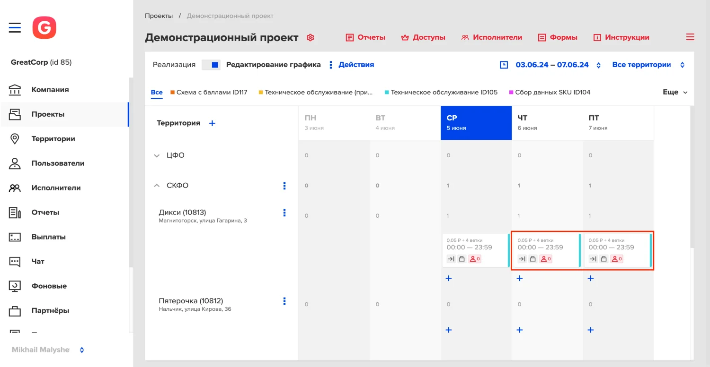

MA.direct
Outcomes
The business got an in-house platform to set work shifts for retail employees and attracted major enterprise clients like Tele2 (Sweden) and Japan Tobacco International.
I shipped UI/UX for core workflows:
- Setting up work shifts for employees across scattered geo-points
- Enhanced payroll and cash withdrawal under tight technical constraints
- Re-engineered employee experience (time-to-accept improved by 29%)
I built a scalable multi-platform design library that made new features easier to ship
Legacy vs Current
...


(opens full size) (opens full size)
(opens full size)